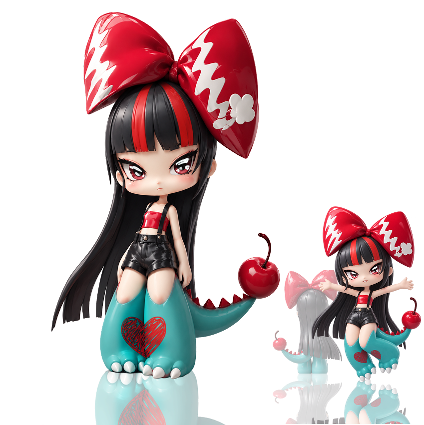
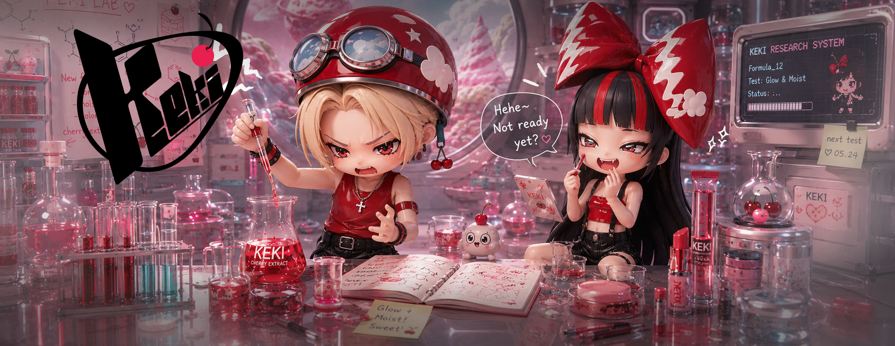
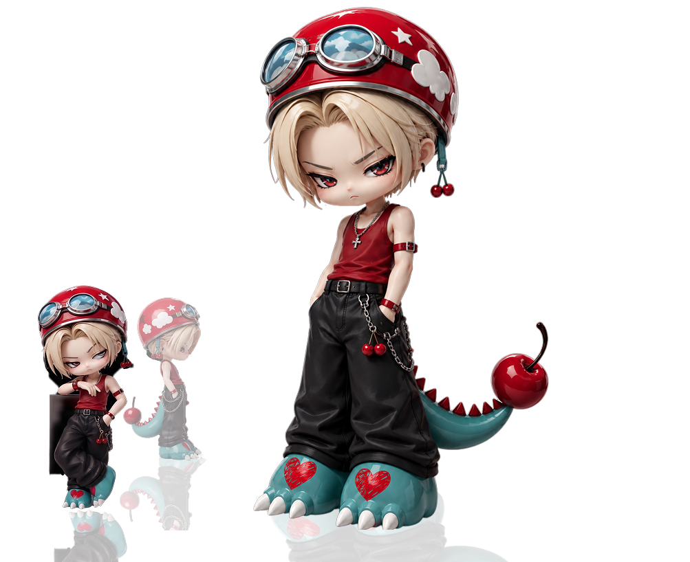
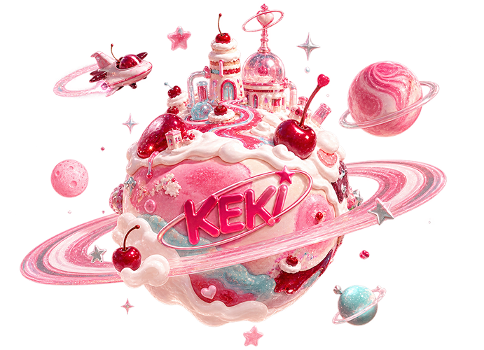
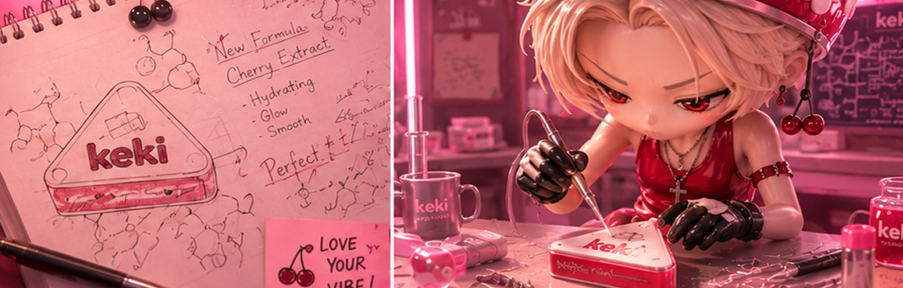
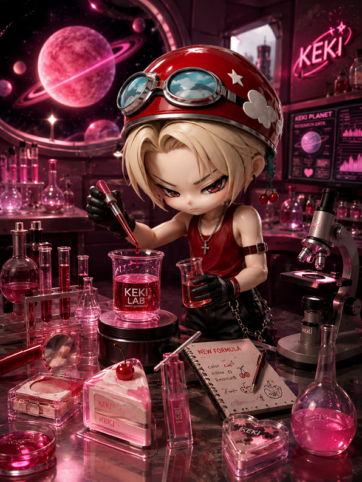
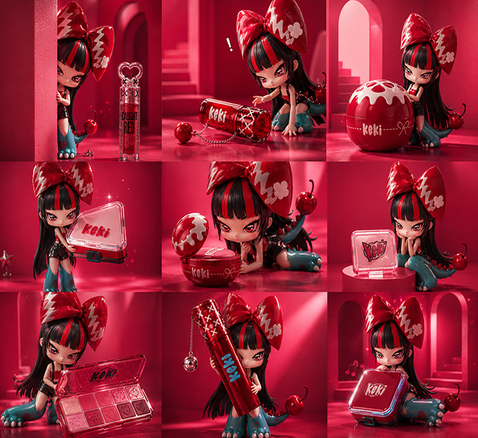
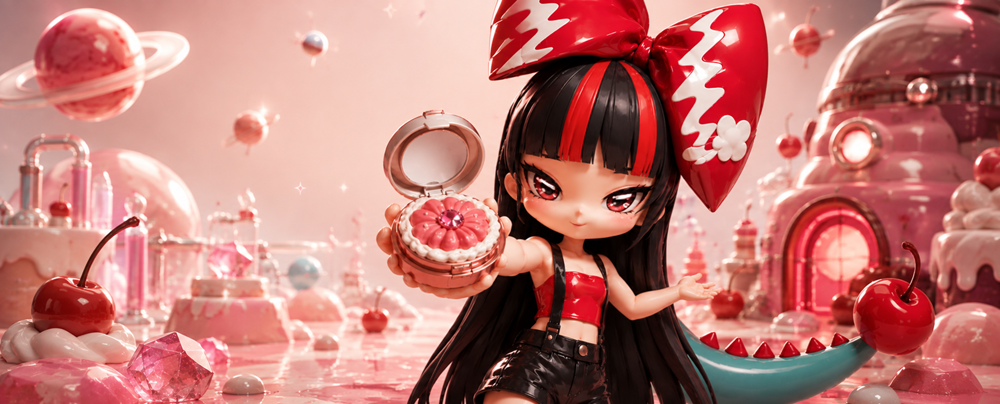
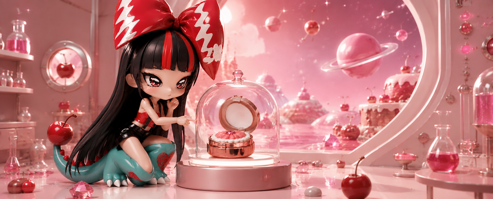
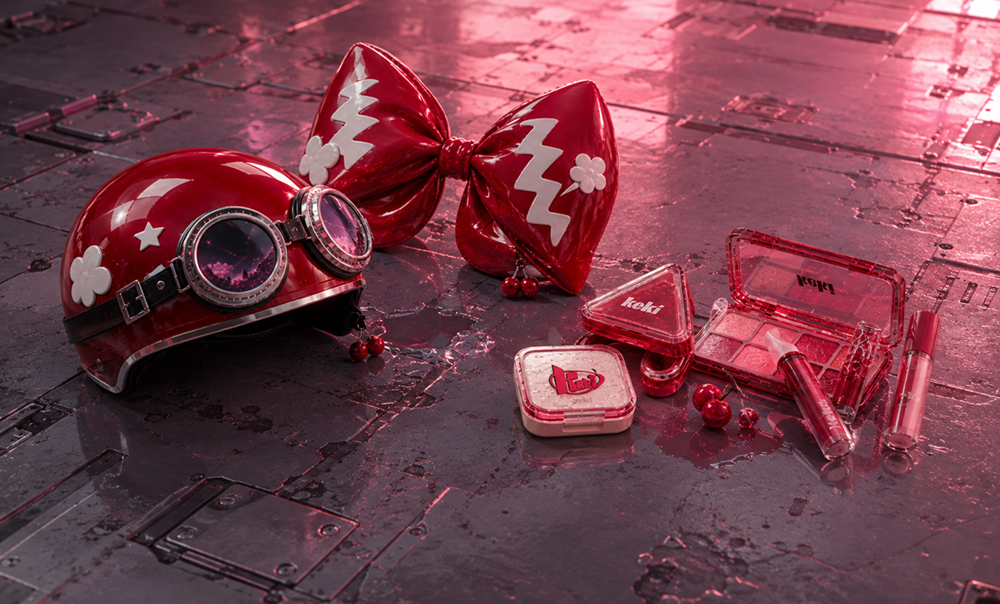

“어서 와! 오늘은 어떤 색으로 놀아볼래?”
케키 행성의 자유분방한 메이크업 러버.
밝고 장난기 많은 성격으로, 호기심이 생기면 무엇이든 직접 해보는 것을 좋아한다. 특히 모도가 화장품을 연구할 때면 옆에서 장난을 치거나 완성된 제품을 누구보다 먼저 테스트한다. 메이크업을 자신만의 색과 매력을 발견하는 즐거운 놀이처럼 생각하며, KEKI의 다채로운 컬러와 자유로운 감성을 보여주는 캐릭터다.

케키의 공식 캐릭터 ‘러브’와 ‘모도’는 브랜드의 세계관과 개성을 보여주는 캐릭터입니다.
화장품을 연구하고 만드는 모도와, 완성된 제품을 즐기고 테스트하는 러브의 상반된 성격을 통해 케키만의 이야기를 만들어갑니다.
두 캐릭터의 티격태격하는 관계와 개성 있는 비주얼을 활용해 브랜드에 재미와 친근함을 더하고, 다양한 콘텐츠에서 케키만의 차별화된 아이덴티티를 전달합니다.

케키 행성의 자유분방한 메이크업 러버.
밝고 장난기 많은 성격으로, 호기심이 생기면 무엇이든 직접 해보는 것을 좋아한다. 특히 모도가 화장품을 연구할 때면 옆에서 장난을 치거나 완성된 제품을 누구보다 먼저 테스트한다. 메이크업을 자신만의 색과 매력을 발견하는 즐거운 놀이처럼 생각하며, KEKI의 다채로운 컬러와 자유로운 감성을 보여주는 캐릭터다.

케키 행성에서 새로운 화장품을 연구하고 만들어내는 괴짜 연구자.
실험할 때만큼은 누구보다 진지하고 완벽을 추구하지만, 뜻대로 되지 않으면 금세 까칠해지는 편이다. 러브가 연구실을 들쑤시고 제품을 몰래 테스트할 때마다 투덜거리지만, 은근히 러브의 반응을 연구에 참고하기도 한다. 무심하고 까칠해 보여도 결국 더 재미있는 KEKI를 만들기 위해 오늘도 연구에 몰두하는 캐릭터다.

케키는 디저트에서 영감을 받아 탄생한 상상 속 행성 ‘케키’에서 시작됩니다.
이곳에서 모도는 새로운 뷰티 아이템을 연구하고,
러브는 즐거운 테스트를 통해 케키만의 감각을 완성해 나갑니다.


모도는 케키 행성 곳곳을 탐험하며 호기심이 생긴 컬러와 아이디어를 채집합니다.
새로운 컬러와 텍스처를 발견하면 꼼꼼하게 기록해 자신만의 연구 노트로 완성합니다.
한 번의 실험으로 끝내지 않습니다.
발색부터 질감, 사용감까지 수없이 테스트하며 상상 속 아이디어를 실제 화장품에 가장 가까운 모습으로 다듬습니다.
수많은 실험 끝에 발견한 컬러와 감각을 바탕으로 아이디어는 실제 케키의 제품으로 탄생합니다.
“모도에게 실패한 실험은 있어도, 평범한 결과는 없다.”

케키 행성을 돌아다니며 우연히 마주친 새로운 컬러와 제품!
러브는 그냥 지나치지 않고 자신만의 취향으로 특별한 아이템을 발견합니다.
마음에 드는 제품은 직접 써보는 게 러브의 방식.
컬러와 질감을 자유롭게 즐기며 케키에서만 느낄 수 있는 색다른 재미를 경험합니다.
혼자만 알기엔 너무 아까운 발견.
러브가 직접 경험한 제품과 컬러를 소개하며 케키의 매력을 우주에 퍼뜨립니다.
“러브에게 새로운 컬러는, 발견하고 즐기고 자랑하는 것”



모도가 만든 컬러를 러브가 발견하고, 직접 경험하며 새로운 가능성을 찾아냅니다.
모도의 연구와 러브의 발견이 반복해서 오가며, 마침내 둘만의 KEKI가 완성됩니다.